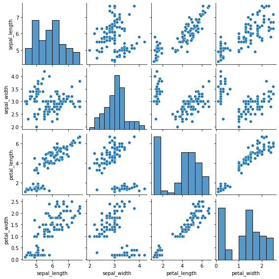

from sklearn.datasets import fetch_california_housing
data = fetch_california_housing(as_frame=True)project1 : 주택 가격 예측
데이터
- scikit-learn에서 제공하는 캘리포니아 주택 가격 데이터
- 1990년대 캘리포니아 지역의 주택 가격에 대한 데이터
- 총 20,640개의 관측값과 8개의 독립변수(feature), 1개의 종속변수(target)으로 구성됨
df = data.frame # 표 형태로 바꾸기
df.head()| MedInc | HouseAge | AveRooms | AveBedrms | Population | AveOccup | Latitude | Longitude | MedHouseVal | |
|---|---|---|---|---|---|---|---|---|---|
| 0 | 8.3252 | 41.0 | 6.984127 | 1.023810 | 322.0 | 2.555556 | 37.88 | -122.23 | 4.526 |
| 1 | 8.3014 | 21.0 | 6.238137 | 0.971880 | 2401.0 | 2.109842 | 37.86 | -122.22 | 3.585 |
| 2 | 7.2574 | 52.0 | 8.288136 | 1.073446 | 496.0 | 2.802260 | 37.85 | -122.24 | 3.521 |
| 3 | 5.6431 | 52.0 | 5.817352 | 1.073059 | 558.0 | 2.547945 | 37.85 | -122.25 | 3.413 |
| 4 | 3.8462 | 52.0 | 6.281853 | 1.081081 | 565.0 | 2.181467 | 37.85 | -122.25 | 3.422 |
# 데이터 확인
df.info()<class 'pandas.core.frame.DataFrame'>
RangeIndex: 20640 entries, 0 to 20639
Data columns (total 9 columns):
# Column Non-Null Count Dtype
--- ------ -------------- -----
0 MedInc 20640 non-null float64
1 HouseAge 20640 non-null float64
2 AveRooms 20640 non-null float64
3 AveBedrms 20640 non-null float64
4 Population 20640 non-null float64
5 AveOccup 20640 non-null float64
6 Latitude 20640 non-null float64
7 Longitude 20640 non-null float64
8 MedHouseVal 20640 non-null float64
dtypes: float64(9)
memory usage: 1.4 MB# 데이터 전처리 : 결측값 확인
df.isna().sum()MedInc 0
HouseAge 0
AveRooms 0
AveBedrms 0
Population 0
AveOccup 0
Latitude 0
Longitude 0
MedHouseVal 0
dtype: int64데이터 전처리 : 훈련 데이터와 평가 데이터로 분할 (7:3 비율)
california = fetch_california_housing() X = california.data y = california.target
from sklearn.model_selection import train_test_split X_train, X_test, y_train, y_test = train_test_split(X, y, test_size=0.3, random_state=42)+ 캘리포니아 주택 가격 데이터를 확인한 결과, 관측값은 20,640개, 변수는 9개로 나타남 + 주택 가격에 영향을 미치는 특성은 다음과 같음 + MedInc : 지역 중위 소득 (10,000 USD) + HouseAge : 주택 연식 (건축 후 경과된 연도 수) + AveRooms : 가구당 평균 방 개수 + AveBedrms : 가구당 평균 침실 개수 + Population : 지역 내 인구 수 + AveOccup : 가구당 평균 거주 인원 수 + Latitude : 위도 + Longitude : 경도 + MedHouseVal : 주택 중위 가격 (100,000 USD)
# 데이터 전처리 : 훈련 데이터와 평가 데이터로 분할 (7:3 비율)
california = fetch_california_housing()
X = california.data
y = california.target
from sklearn.model_selection import train_test_split
X_train, X_test, y_train, y_test = train_test_split(X, y, test_size=0.3, random_state=42)단위 : 달러
- 표준편차 : 11만
- 중위 주택 가격의 평균 : 20만
- 중위 주택 가격 m : 1만 4천, q1 : 11만 9천, 중앙값 : 17만 9천, q3 : 26만, M : 50만
# 요약 통계량 확인
import pandas as pd
df_train = pd.DataFrame(data=X_train, columns=california.feature_names)
df_train['MedHouseVal'] = y_train
df_train.describe()| MedInc | HouseAge | AveRooms | AveBedrms | Population | AveOccup | Latitude | Longitude | MedHouseVal | |
|---|---|---|---|---|---|---|---|---|---|
| count | 14448.000000 | 14448.000000 | 14448.000000 | 14448.000000 | 14448.000000 | 14448.000000 | 14448.000000 | 14448.000000 | 14448.000000 |
| mean | 3.876892 | 28.575374 | 5.438125 | 1.098033 | 1427.927326 | 3.119236 | 35.650669 | -119.584102 | 2.069240 |
| std | 1.904908 | 12.613634 | 2.453569 | 0.447498 | 1140.225190 | 12.373636 | 2.135742 | 2.002930 | 1.157492 |
| min | 0.499900 | 1.000000 | 0.888889 | 0.333333 | 3.000000 | 0.692308 | 32.550000 | -124.350000 | 0.149990 |
| 25% | 2.567225 | 18.000000 | 4.448928 | 1.006783 | 791.000000 | 2.430380 | 33.940000 | -121.800000 | 1.193000 |
| 50% | 3.539100 | 29.000000 | 5.232422 | 1.049492 | 1168.000000 | 2.817147 | 34.270000 | -118.510000 | 1.793000 |
| 75% | 4.758075 | 37.000000 | 6.060692 | 1.100328 | 1727.000000 | 3.279135 | 37.720000 | -118.010000 | 2.646000 |
| max | 15.000100 | 52.000000 | 141.909091 | 25.636364 | 35682.000000 | 1243.333333 | 41.950000 | -114.310000 | 5.000010 |
plt.figure(figsize=(6, 4))
sns.histplot(df_train['MedHouseVal'], color='purple', alpha=0.5)plt.figure(figsize=(7, 1))
sns.boxplot(x='MedHouseVal', color='m', data=df_train)
plt.show()# 산점도
import seaborn as sns
import matplotlib.pyplot as plt
sns.pairplot(df_train, height=0.8, plot_kws={'s': 5}, diag_kind='kde')
plt.show()df_train| MedInc | HouseAge | AveRooms | AveBedrms | Population | AveOccup | Latitude | Longitude | MedHouseVal | |
|---|---|---|---|---|---|---|---|---|---|
| 0 | 4.1312 | 35.0 | 5.882353 | 0.975490 | 1218.0 | 2.985294 | 33.93 | -118.02 | 1.93800 |
| 1 | 2.8631 | 20.0 | 4.401210 | 1.076613 | 999.0 | 2.014113 | 32.79 | -117.09 | 1.69700 |
| 2 | 4.2026 | 24.0 | 5.617544 | 0.989474 | 731.0 | 2.564912 | 34.59 | -120.14 | 2.59800 |
| 3 | 3.1094 | 14.0 | 5.869565 | 1.094203 | 302.0 | 2.188406 | 39.26 | -121.00 | 1.36100 |
| 4 | 3.3068 | 52.0 | 4.801205 | 1.066265 | 1526.0 | 2.298193 | 37.77 | -122.45 | 5.00001 |
| ... | ... | ... | ... | ... | ... | ... | ... | ... | ... |
| 14443 | 6.3700 | 35.0 | 6.129032 | 0.926267 | 658.0 | 3.032258 | 33.78 | -117.96 | 2.29200 |
| 14444 | 3.0500 | 33.0 | 6.868597 | 1.269488 | 1753.0 | 3.904232 | 34.02 | -117.43 | 0.97800 |
| 14445 | 2.9344 | 36.0 | 3.986717 | 1.079696 | 1756.0 | 3.332068 | 34.03 | -118.38 | 2.22100 |
| 14446 | 5.7192 | 15.0 | 6.395349 | 1.067979 | 1777.0 | 3.178891 | 37.58 | -121.96 | 2.83500 |
| 14447 | 2.5755 | 52.0 | 3.402576 | 1.058776 | 2619.0 | 2.108696 | 37.77 | -122.42 | 3.25000 |
14448 rows × 9 columns
# 상관분석
import numpy as np
corr_train = df_train.corr()
upp_mat = np.triu(corr_train)
plt.figure(figsize=(12, 9))
sns.heatmap(corr_train, annot=True, mask=upp_mat, cmap='bwr', vmin=-1, vmax=1)
plt.title('Correlation Matrix')
plt.show()- 중위 주택 가격은 지역 중위 소득과 강한 양의 상관관계 존재
- 또한 주택 연식, 가구당 평균 방 개수, 위도 간에도 약한 양의 상관관계
- 중위 주택 가격을 예측하는 특성으로 해당 변수 선택
# 상관관계가 강한 독립변수 선택
# scikit-learn에서 입력 데이터(feature)를 2차원 배열로 요구함
features = ['MedInc', 'HouseAge', 'AveRooms', 'Latitude']
target = 'MedHouseVal'
X_train = df_train[features]
y_train = df_train[target]# 평가 데이터에서도 훈련 데이터에서 사용한 독립변수만 선택
df_test = pd.DataFrame(data=X_test, columns=california.feature_names)
df_test['MedHouseVal'] = y_test
X_test = df_test[features]# 선형 회귀모델 생성 및 학습
from sklearn.linear_model import LinearRegression
model = LinearRegression()
model.fit(X_train, y_train)
# 회귀모델 평가 : 결정계수, MSE
from sklearn.metrics import mean_squared_error, r2_score
y_pred = model.predict(X_test)
R2 = r2_score(y_test, y_pred)
RMSE = np.sqrt(mean_squared_error(y_test, y_pred))
print(f"결정계수 : {R2:.3f}")
print(f"RMSE : {RMSE:.3f}")결정계수 : 0.520
RMSE : 0.794# 회귀계수
df_coef = pd.DataFrame({'Feature': features, 'Coefficient': model.coef_})
(df_coef)| Feature | Coefficient | |
|---|---|---|
| 0 | MedInc | 0.435658 |
| 1 | HouseAge | 0.016937 |
| 2 | AveRooms | -0.019505 |
| 3 | Latitude | -0.045071 |
- 회귀계수를 살펴보면 지역 중위 소득이 1만 달러 증가할수록 중위 주택 가격은 4만 3천 달러 증가하는 것으로 나타남. 이는 경제적으로 여유가 있을수록 좋은 집에 거주함을 경햐이 있음을 보임
- 주택 연식이 1년 증가하면 중위 주택 가격은 1693달러 증가하는 것으로 나타남
- 가구당 평균 방 개수가 1개 증가하면 중위주택 가격은 1950달러 감소함
- 위도가 1도 증가하면 중위 주택 가격은 4507달러 감소하는 경향이 있음. 이는 일반적으로 캘리포니아주는 남부 지역이 상대적으로 대도시가 많아 주택 가격이 더 높은 것을 반영하는 것으로 판단됨
# statsmodels 라이브러리 설치
#!pip install statsmodels# [참고] 회귀계수의 유의성
import statsmodels.api as sm
X_train_const = sm.add_constant(X_train)
ols_model = sm.OLS(y_train, X_train_const).fit()
print(ols_model.summary()) OLS Regression Results
==============================================================================
Dep. Variable: MedHouseVal R-squared: 0.519
Model: OLS Adj. R-squared: 0.518
Method: Least Squares F-statistic: 3890.
Date: Thu, 24 Jul 2025 Prob (F-statistic): 0.00
Time: 11:50:47 Log-Likelihood: -17332.
No. Observations: 14448 AIC: 3.467e+04
Df Residuals: 14443 BIC: 3.471e+04
Df Model: 4
Covariance Type: nonrobust
==============================================================================
coef std err t P>|t| [0.025 0.975]
------------------------------------------------------------------------------
const 1.6091 0.115 13.957 0.000 1.383 1.835
MedInc 0.4357 0.004 116.405 0.000 0.428 0.443
HouseAge 0.0169 0.001 31.487 0.000 0.016 0.018
AveRooms -0.0195 0.003 -6.652 0.000 -0.025 -0.014
Latitude -0.0451 0.003 -14.213 0.000 -0.051 -0.039
==============================================================================
Omnibus: 3079.717 Durbin-Watson: 1.979
Prob(Omnibus): 0.000 Jarque-Bera (JB): 8182.373
Skew: 1.148 Prob(JB): 0.00
Kurtosis: 5.884 Cond. No. 809.
==============================================================================
Notes:
[1] Standard Errors assume that the covariance matrix of the errors is correctly specified.X_test = X_test[features]
y_pred = model.predict(X_test)
# RMSE, 결정계수
from sklearn.metrics import mean_squared_error, r2_score
RMSE = np.sqrt(mean_squared_error(y_test, y_pred))
R2 = r2_score(y_test, y_pred)- RMSE는 0.794로, 주택 중위 가격의 실제값과 예측값이 평균적으로 약 8만 달러 차이가 있다는 것을 의미함
- 학습 데이터에서 주택 중위 가격의 평균이 약 20만 달러인 점을 고려하면, 모델의 평균 오차는 약 30% 수준임을 알 수 있음
- 따라서 평균 오차가 비교적 큰 편이므로, 모델 성능 개선이 필요한 것으로 판단됨
- 결정계수는 52.0%로 나타남
import seaborn as snsdf = sns.load_dataset("iris")df| sepal_length | sepal_width | petal_length | petal_width | species | |
|---|---|---|---|---|---|
| 0 | 5.1 | 3.5 | 1.4 | 0.2 | setosa |
| 1 | 4.9 | 3.0 | 1.4 | 0.2 | setosa |
| 2 | 4.7 | 3.2 | 1.3 | 0.2 | setosa |
| 3 | 4.6 | 3.1 | 1.5 | 0.2 | setosa |
| 4 | 5.0 | 3.6 | 1.4 | 0.2 | setosa |
| ... | ... | ... | ... | ... | ... |
| 145 | 6.7 | 3.0 | 5.2 | 2.3 | virginica |
| 146 | 6.3 | 2.5 | 5.0 | 1.9 | virginica |
| 147 | 6.5 | 3.0 | 5.2 | 2.0 | virginica |
| 148 | 6.2 | 3.4 | 5.4 | 2.3 | virginica |
| 149 | 5.9 | 3.0 | 5.1 | 1.8 | virginica |
150 rows × 5 columns
df.info()<class 'pandas.core.frame.DataFrame'>
RangeIndex: 150 entries, 0 to 149
Data columns (total 5 columns):
# Column Non-Null Count Dtype
--- ------ -------------- -----
0 sepal_length 150 non-null float64
1 sepal_width 150 non-null float64
2 petal_length 150 non-null float64
3 petal_width 150 non-null float64
4 species 150 non-null object
dtypes: float64(4), object(1)
memory usage: 6.0+ KB#
df.isna().sum()sepal_length 0
sepal_width 0
petal_length 0
petal_width 0
species 0
dtype: int64X = df.drop(columns = "species")
y = df["species"]from sklearn.model_selection import train_test_split
X_train, X_test, y_train, y_test = train_test_split(X, y, test_size=0.3, random_state=42)df_train = pd.concat([X_train, y_train], axis=1)
sns.boxplot(x='species', y='sepal_length', data=df_train)
plt.ylabel('')Text(0, 0.5, '')sns.pairplot(X_train, height=2)
plt.figure(figsize=(5, 3))
sns.boxplot(y='species', x='sepal_length', hue='species', data=df_train)
plt.ylabel('')Text(0, 0.5, '')
sns.pairplot(df_train, hue='species', height=2) from sklearn.neighbors import KNeighborsClassifier
from sklearn.model_selection import cross_val_score
k_range = range(1, 20, 2)
k_score = []
for k in k_range(1, 2):
knn = KNeighborsClassifier(n_neighbors=k)
scores = cross_val_score(knn, X_train, y_train, cv=5, scoring='accuracy')
k_scores.append(scores.mean())
print(f'k={k}일 때 정확도 : {scores.mean():.3f}')--------------------------------------------------------------------------- TypeError Traceback (most recent call last) <ipython-input-141-e4abced1d2fc> in <module> 5 k_score = [] 6 ----> 7 for k in k_range(1, 2): 8 knn = KNeighborsClassifier(n_neighbors=k) 9 scores = cross_val_score(knn, X_train, y_train, cv=5, scoring='accuracy') TypeError: 'range' object is not callable
best_k = k_range[k_scores.index(max(k_scores))]
print(f"최적의 k의 값은 {best_k}이며, 평균 정확도는 {max(k_scores):.3f}")File "<ipython-input-127-464914cff1ed>", line 2 print(f"최적의 k의 값은 {best_k}이며, 평균 정확도는 {max(k_scores):.3f} ^ SyntaxError: EOL while scanning string literal
knn = from sklearn.neighbors import KNeighborsClassifier(n_neighbors=k)
knn.flt(X_train, y_train)
y_pred = knn.predict(X_test)
accuracy = accuracy_score(y_test, y_pred)File "<ipython-input-132-478f26fe98a6>", line 1 knn = from sklearn.neighbors import KNeighborsClassifier(n_neighbors=k) ^ SyntaxError: invalid syntax